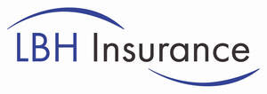

Trade Mark Journal No.2025/025 20 June 2025
UK00004212450 2 June 2025 (36)

- Class 36
- Insurance; Insurance underwriting; Underwriting (Insurance -); Insurance subrogation; Health insurance; Health insurance underwriting; Mortgage insurance; Insurance underwriting in the field of professional liability insurance; Insurance broking; Accident insurance underwriting; Medical insurance; Brokerage (Insurance -); Brokerage of insurance; Insurance brokerage; Medical insurance underwriting; Accident insurance; Casualty insurance underwriting; Non-life insurance underwriting; Banking insurance; Provision of insurance services to insurance companies; Accident insurance underwriting services; Travel insurance; Automobile accident insurance underwriting; Brokerage of non-life insurance; Insurance services; Property insurance underwriting; Insurance underwriting services; Underwriting of insurance (Services for the -); Underwriting of health insurance (Services for the -); Life insurance underwriting; Credit insurance; Transit insurance underwriting; Insurance actuarial services; Arranging for financing of insurance premiums; Insurance for businesses; Insurance agencies; Motor insurance; Brokerage of casualty insurance; Underwriting insurance for pre-paid health care; Life insurance; Professional indemnity insurance; Marine insurance underwriting; Insurance consultancy; Insurance underwriting consultancy; Aviation insurance; Insurance for garages; Life insurance brokerage; Insurance for vans; Marine insurance; Fire insurance underwriting; Insurance guarantees; Credit services for the payment of insurance premiums; Credit services for payment of insurance premiums; Private health insurance; Insurance brokering; Insurance brokers (Services of -); Insurance underwriting and appraisals and assessment for insurance purposes; Insurance for offices; Marine accidents insurance underwriting; Mortgage banking insurance; Guarantee insurance; Underwriting of company insurance (Services for the -); Insurance administration; Dental health insurance underwriting and administration; Insurance information; Information (Insurance -); Vehicle insurance services; Dental insurance services; Underwriting of personal accident insurance (Services for the -); Insurance for hotels; Motor insurance brokerage; Insurance consultation; Underwriting of credit insurance (Services for the -); Transport insurance brokerage; Consultations [insurance]; Insurance advice; Life insurance agencies; Insurance brokerage services; Insurance research; Research (Insurance -); Commodities insurance; Marine transportation insurance underwriting; Fire insurance; Arranging of insurance; Arranging insurance; Insurance (Arranging of -); Warranty insurance services; Insurance agency and brokerage; Underwriting of business insurance (Services for the -); Travel insurance services; Insurance of buildings; Transit insurance brokerage; Insurance investigations; Medical insurance brokerage services; Insurance brokerage for property; Studies (Insurance -); Insurance services for the protection of mortgages; Insurance for legal expenses; Legal expenses insurance; Caravan insurance services; Underwriting insurance for pre-paid legal services; Provision of insurance services to reinsurance companies; Insurance agency services; Claims adjustment for non-life insurance; Dental health insurance administration; Insurance premium financing services; Credit risk insurance; Marine fire insurance underwriting; Claim adjustment for non-life insurance; Home insurance services; Insurance services for the protection of drivers; Endowment insurance services; Household insurance services; Guarantee insurance services; Service insurance contracts; Underwriting relating to transport insurance; Administration of insurance claims; Insurance claims administration; Insurance claim assessments; Claim assessments (Insurance -); Personal insurance services; Arranging of credit insurance; Provision of mortgage loan insurance; Settlement of insurance claims; Insurance claims adjustment; Claims adjustment (Insurance -); Insurance claims assessment; Insurance of anti-theft systems; Underwriting relating to marine insurance; Insurance claims adjustment services; Motor vehicle insurance services; Insurance management services; Administration of insurance plans; Insurance plans (Administration of -); Fire insurance valuations; Administration of insurance business; Arranging of life insurance; Insurance risk management; Insurance advisory services; Arranging of travel insurance; Insurance information and consultancy; Insurance arranging services; Administration of insurance portfolios; Insurance brokerage relating to pets; Insurance services for the repayment of medical expense; Variable insurance investment services; Home contents insurance; Insurance claim settlements; Insurance consultation services.
Leslie B Holmes Securities Limited Trading as LBH Insurance